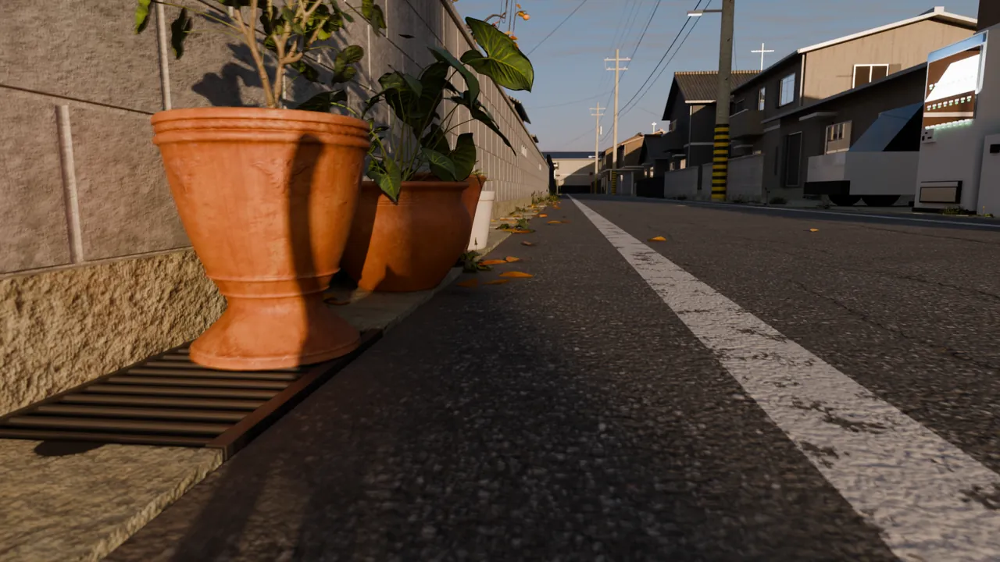
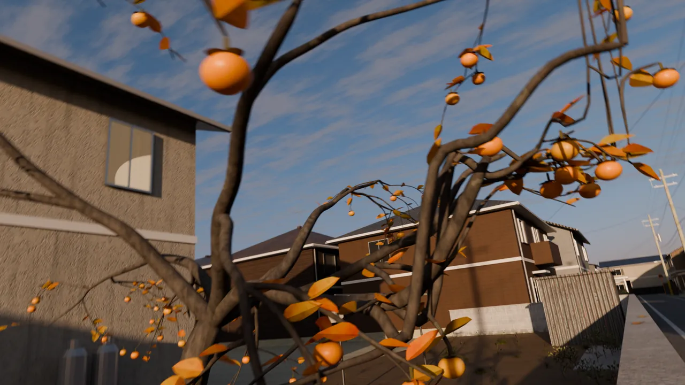
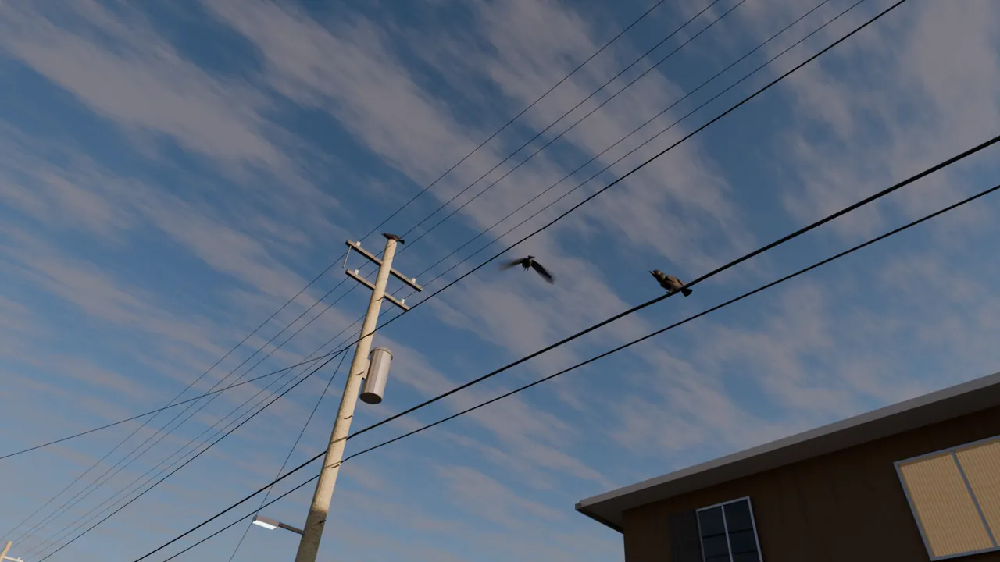
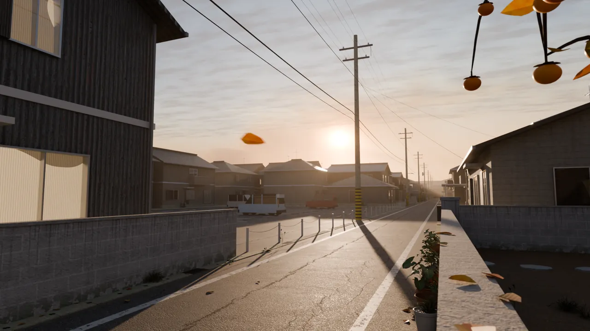
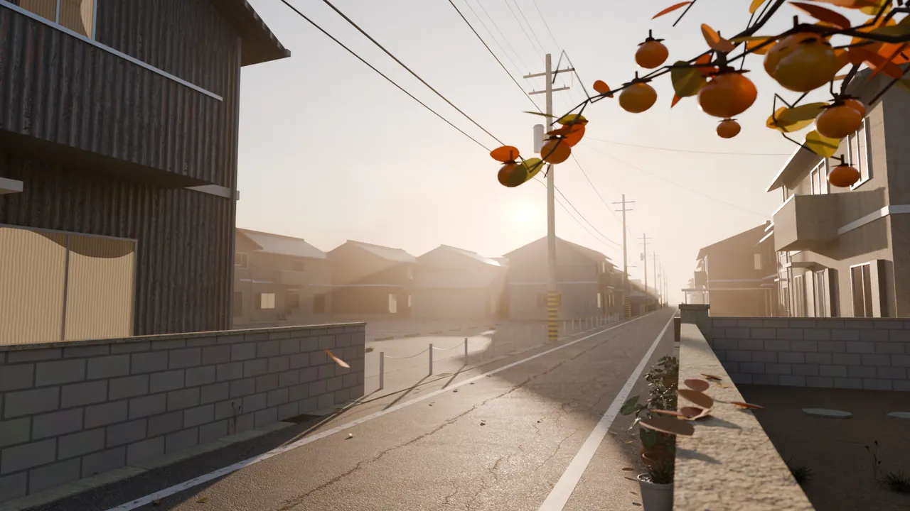
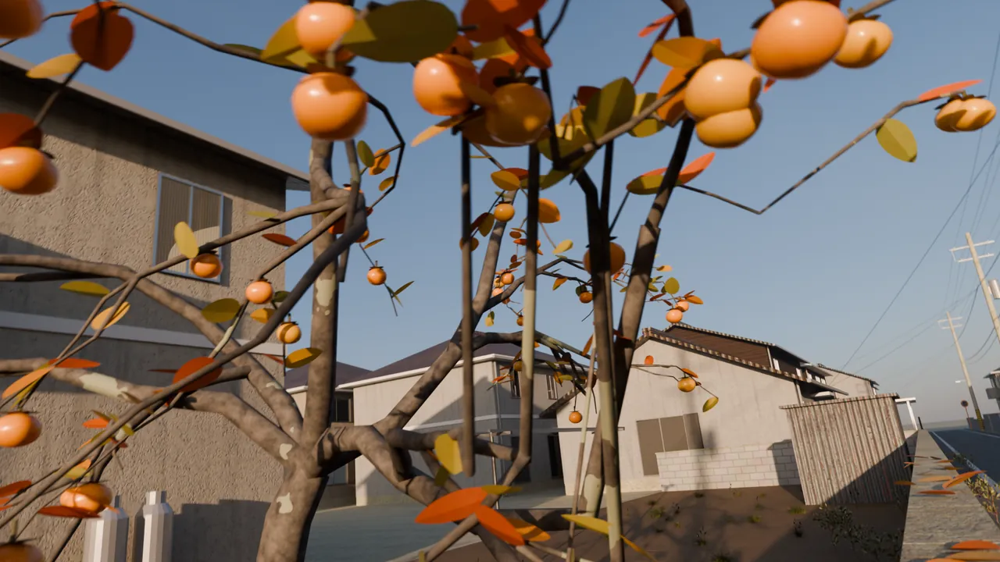
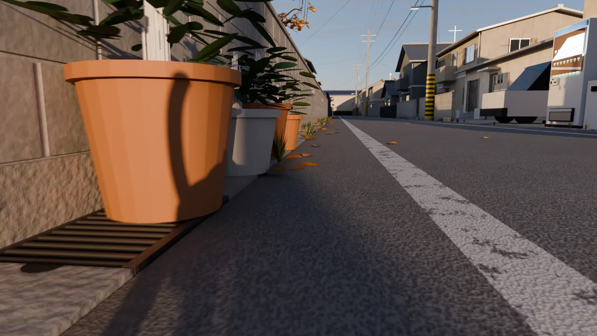
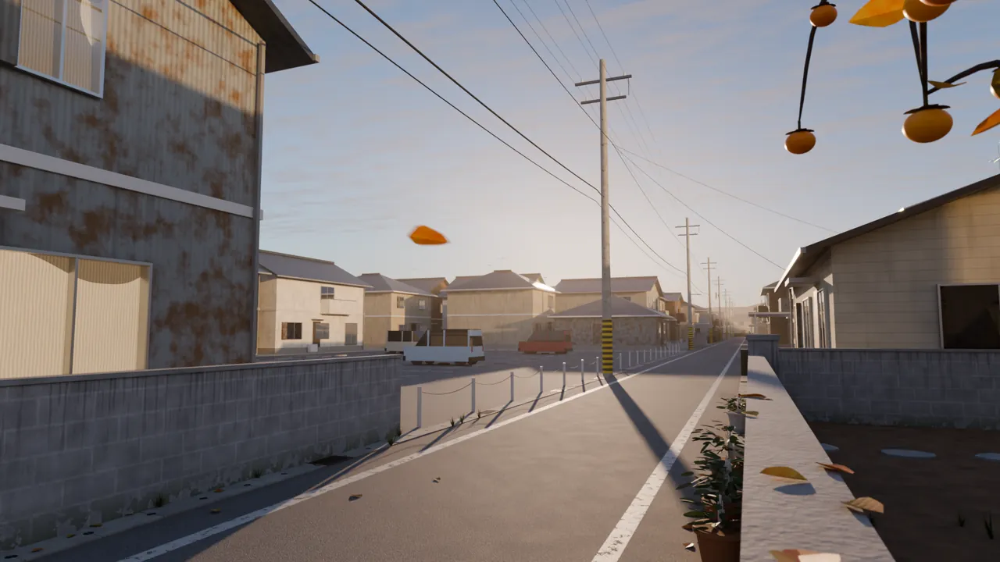

実験レポート ・ 2026 年 11 月 20 日
コードだけで作る、野良猫の目線の 30 秒
X で「Claude Fable 5.2 が、コードだけでリスの目線の 30 秒の動画を作った」という報告を見かけました。同じ決まりで、題材を「日本の地方都市の住宅街を歩く野良猫」に変えて、この PC で確かめました。動画は、Python のスクリプトが Blender を動かして描いた絵と、numpy で合成した音だけでできています。
結果のまとめ
| 確かめたこと | 結果 |
|---|---|
| 同じ決まりで、30 秒の動画が作れるか | 作れた。1920×1080・24 fps・720 コマで、音も入っている。作る係の Claude Opus 5.5 が 1 回作り、Claude Fable 5.2 の点検を受けて 1 回直した |
| 時間と費用は報告に近いか | AI が作業した時間は約 1 時間 30 分、費用は API 換算で $26.08。描画と mp4 に 2 時間 23 分 55 秒かかり、全体では 3 時間 54 分 21 秒。報告は全体 4 時間 15 分（うち描画 3 時間）・$34.76 |
| 生成 AI を使っていないと示せるか | 外から入ったのは Poly Haven の 90 ファイルだけで、どれも Poly Haven が公開している md5 と一致した。公開したスクリプトを空のフォルダで流し直すと、目で見て区別のつかない絵になり（画素の差は最大 5/255）、音は md5 まで一致した |
| 写真スキャンはどれだけ効いているか | 地面と塀は、写真スキャンを外して手続きの模様にしても、ほぼ同じに見えた。差が出たのは、鉢植えの形と家の壁、それに夕日の場面の空と光（HDRI） |
元の報告
- 出どころ: Daniel Zambrini さんの X の投稿（2026 年 11 月 19 日）。30 秒の動画が付いている
- 内容: Fable 5.2 に、リスの目から見た森の暮らしの動画を作らせた
- 作り方: 形・動き・描画は Python のスクリプトが Blender（Cycles）を動かして作り、音は numpy で合成した。動画や画像の生成モデルは使っていない。例外は、スクリプトが Poly Haven から取った CC0 の写真スキャン（森の HDRI、落ち葉と樹皮のテクスチャ、丸太・石・小枝のモデル）だけ
- 数字: API 換算で $34.76、全体で 4 時間 15 分（うち描画が 3 時間）
指示の文面、スクリプト、使った PC、描画の設定、やり直しの回数は書かれていません。元の動画は見比べのために手元で見ましたが、このページには載せていません。リスの目の大写しで始まって終わり、その間は魚眼レンズの低い視点で、落ち葉の地面や倒木の上を走る作りでした。作る係には元の動画を見せていません。
やり方
| 題材 | 日本の地方都市の住宅街を歩く、野良猫の目線。時刻や猫の動きは作る係に任せた |
|---|---|
| 作る係 | Claude Opus 5.5（Claude Code のサブエージェント） |
| 点検係 | Claude Fable 5.2（8 コマの絵だけを見て、欠点を重い順に挙げる。コードは読まない） |
| 道具 | Blender 5.3.0（Cycles、OptiX）、Blender の中の Python 3.13 と numpy 2.3.4、ffmpeg |
| 外から入れてよいもの | Poly Haven の CC0 の素材だけ。スクリプトで取る。2K 以下、合計 300 MB 以内 |
| 出来上がり | 1920×1080、24 fps、30 秒（720 コマ）、音つきの mp4 |
| PC | GeForce RTX 5060 Ti（16 GB）、Ryzen 5 3500、Windows 11 |
- 作る係が、スクリプトを書き、試しに描いて自分で絵を見て直す、を繰り返す。最終の設定で 8 コマを描いたところで止める
- 点検係が 8 コマを見て、欠点を挙げる
- 作る係が、指摘をもとに 1 回だけ直す。指摘 12 件をそのまま渡し、重い順に直すこと、時間は 75 分を目安にすること、1 コマ 15 秒以内を保つことを伝えた
- 取りまとめ役（このセッションの Claude Opus 5.5）が、720 コマを裏で描き、素材とスクリプトを確かめる
作る係への依頼の全文
動画の中身
11 月下旬の晴れた夕方（太陽の高さ 9°、日没の 40 分ほど前）です。カメラは猫の目で、目の高さは地面で 23.5 cm、塀の上で約 1.4 m です。猫の体は画面に写らず、影だけが地面や塀に落ちます。
- 0〜5.8 秒ブロック塀に沿って道の端を歩く。鉢植えに顔を寄せる。塀に耳の形の影が映る
- 5.8〜8.6 秒止まって塀の上を見上げ、身を低くする
- 8.6〜9.2 秒高さ 1.19 m の塀へ跳び乗る
- 9.7〜18.6 秒塀の上を歩く。右下の道と自動販売機をのぞき、左の柿の実を見上げて首をかしげる。柿の葉が落ちる
- 18.7〜23 秒電柱と電線のカラスを見上げる。2 羽が鳴き、1 羽が飛び立つ
- 23〜25.4 秒塀の上で振り返る。遠くのスピーカーから夕方のチャイムが流れ始める
- 25.4〜30 秒座って、道の先の夕日を見る。のどを鳴らす
音はすべて numpy で波形から作っています。風、遠くの車、秋の虫、カラスの声と羽音、自動販売機のうなり、猫の足音・跳躍と着地・のどを鳴らす音、夕方の町内チャイムです。チャイムの旋律は既存の曲ではなく、五音音階のオリジナルです。




時間と費用
費用は、AI の作業の記録に残ったトークン数を、Anthropic の料金表（2026 年 11 月 20 日に確認）で金額に直したものです。
| 段階 | モデル | 時間 | モデルの呼び出し | 費用（API 換算） |
|---|---|---|---|---|
| 作る（8 コマまで） | Opus 5.5 | 56 分 36 秒 | 108 回 | $14.80 |
| 点検 | Fable 5.2 | 2 分 1 秒 | 2 回 | $1.29 |
| 直す | Opus 5.5 | 31 分 49 秒 | 49 回 | $9.99 |
| 720 コマの描画と mp4 | （AI は使わない） | 2 時間 23 分 55 秒 | 0 回 | $0 |
| 合計 | 3 時間 54 分 21 秒 | 159 回 | $26.08 |
- 費用のほとんどは、作る係が毎回読み直すそれまでのやり取り（キャッシュの読み込み、合わせて約 5,859 万トークン）と、書いたコード（出力、約 35 万トークン）でした。
- 取りまとめ役の分（素材の確かめ、描画の指示、このレポート）は、同じ記録にほかの作業が混ざっていて切り分けられないので、含めていません。元の報告の $34.76 がどこまでを含むかは書かれていないので、金額は目安として比べてください。
- 描画は 96 サンプルで、720 コマに 8,543 秒、1 コマ平均 11.9 秒でした。地面すれすれを歩く最初の 10 秒がいちばん重く（平均約 15 秒）、空を見上げる 19〜23 秒は平均約 6 秒です。
点検で何が変わったか
点検係の Fable 5.2 は、8 コマの絵だけを見て 12 件の欠点を挙げました（重い 5 件、中くらい 5 件、軽い 2 件）。作る係は 31 分で直し、「8 件を直し、4 件は一部だけ直した」と報告しました。描き上がった 720 コマを見ると、カラスは直りきっていなかったので、下の表では直した 7 件、一部 5 件としています。

いちばん重い指摘だった夕日の場面。もやを約 4 分の 1 にし、太陽の円が残るようにして、露出を下げた。

柿の木と空。枝を滑らかにし、実の形と葉の色を変え、薄い巻雲を足した。
| 指摘 | 重さ | 結果 | 直した内容 |
|---|---|---|---|
| 最後の夕日の絵が全体に白く、太陽の円が見えない | 重い | 直した | もやを約 4 分の 1 に。太陽の明るさの上限を上げ、周りだけをにじませる。露出を下げる |
| 家が箱で、同じ家が並び、暮らしの物がない | 重い | 一部 | 窓をガラス・枠・奥の部屋の 3 層にし、約 25% を明るく。外壁 12 種、屋根 7 色。アンテナ・洗濯物・ボンベ・銘柄のない軽自動車・自転車を置く。屋根の形は増やせず、奥の家はまだ似ている |
| 柿の木が作り物に見える | 重い | 直した | 枝を滑らかにして先を細く。実をつぶして溝と白い粉。葉を反らせ、色をまだらに |
| カラスがつやのある置物に見える | 重い | 一部 | 全長 0.54 m にし、胴・頭・くちばし・翼・尾・脚を分けて作る。つや消しの黒。止まった所で電線をたわませる。ただし近くに写る場面では灰褐色に見え、丸い部品をつないだ形が分かる |
| 着地直後の絵が全面ぼける | 重い | 直した | 絞りを f/8 に。ピントの範囲を 1〜30 m に。着地の揺れを 0.2 秒で収める。塀の継ぎ目の線を消す |
| 落ち葉が同じ形の橙色の板 | 中くらい | 直した | 形 4 種、大きさと色を散らし、8 割を塀の根元と路肩に寄せる |
| ブロック塀の質感と目地 | 中くらい | 一部 | 灰色にし、雨だれとこけを足す。目地を浅く明るく。門は足せなかった |
| 道が地平線まで一直線 | 中くらい | 一部 | 丁字路と突き当たりの家、遠くの山の稜線を足す。電柱の間隔を散らす。電柱の傾きは手放した |
| 自動販売機がおもちゃに見える | 中くらい | 直した | 缶とボトルの見本、光る棚、ガラス、値札・ボタン・取り出し口。前の地面を照らす |
| 空が昼の青で、夕方の色がない | 中くらい | 一部 | 地平近くを桃色〜橙に補正し、薄い巻雲を足す。巻雲は白っぽいまま |
| 地面の境目と庭がきれいすぎる | 軽い | 直した | 路肩に砂と土の帯、境目に草 50 株、側溝のふたの手掛け、砂利 |
| 白線のふちと、電柱・電線の細部 | 軽い | 直した | 白線を路面の模様にし、ふちをがたつかせる。がいしと変圧器。電線の太さを 3 段に |
直したあとも、最後の場面を除くと空は昼に近い青のままで、夕方らしさは弱いと感じました。直す前は 1 コマ約 9.5 秒でしたが、直したあとは平均 11.9 秒になりました。
生成 AI を使っていないことの確かめ
「コードだけで作った」は、作った本人の申告だけでは確かめられません。そこで、外から入ったものと、スクリプトが読み込むものを調べました。
- 外から入ったもの: スクリプトが取った 90 ファイル（153 MB）は、どれも Poly Haven の API が公開している md5 と一致しました。素材のフォルダにあるほかのファイルは、スクリプト自身が書いた目録だけです。
- スクリプトが読み込むもの: 画像とモデルを読み込む所は、どれも素材のフォルダの中を指していました。スクリプトに書かれた URL は Poly Haven の 3 つだけです。
- 流し直したときの絵: 公開したソースを空のフォルダへ写し、素材は手元の 90 ファイルを写して、
bash make.sh --frames 677-684を流しました。続けて最初の 4 コマも描きました。素材を取る処理は Poly Haven の API に問い合わせて目録を作り直し、大きさの合うファイルは取り直さないので、ダウンロードは 0 件でした。作り直した目録は、元と md5 まで一致しました。描いた 12 コマは、約 95% の画素が元と完全に一致し、違う画素も差は最大 5（255 段階）で、PSNR は約 66 dB でした。PNG のファイルがバイト単位で一致しない原因は、GPU の計算の細かい誤差と考えられます（確かめてはいません）。 - 音: 波形はすべて numpy の計算です。流し直した音のファイルは、md5 まで元と一致しました。
ただし、作る係が考える途中で何を参考にしたかまでは、外からは分かりません。確かめられるのは、出来上がりがスクリプトと Poly Haven の素材だけから作り直せる、というところまでです。
写真スキャンはどれだけ効いているか
作る係には、Poly Haven の素材をすべて手続きの代わりのもの（ノイズの模様のテクスチャ、手続きの鉢や雑草、Blender の空のシェーダー）に替えて描く切り替えも作らせました。同じカメラで描いて比べます。

最初の場面。鉢植えの形と細かさが違う。アスファルトと塀は、手続きの模様でもほぼ同じに見える。

夕日の場面。写真スキャンの版は、空の HDRI にある太陽と、それが作る逆光の色がある。手続きだけの版は、空のシェーダーの太陽が画面に写らず、空が青い。左の家の壁の模様も違う。
地面すれすれの場面では、絵の印象のほとんどを、手続きで作った形（ブロックを 1 個ずつ積んだ塀、家、電柱と電線、柿の木、カラス）と、低い日ざしの光が決めていました。写真スキャンが効いていたのは、近くに写る鉢植えのような形の細かい物と、夕日の場面の空と光です。
分かったこと
- 報告にあった作り方（Python が Blender を動かし、音は numpy、素材は Poly Haven の CC0 だけ）で、30 秒の動画は作れました。費用も報告と同じくらいの大きさでした。
- 作る係は、試しに描いた絵を自分で見て直すことができ、1 回目で場面としてまとまった動画になりました。点検係の指摘を受けた 2 回目では、指摘した場所がはっきり良くなりました。ただし、作る係が「直した」と報告したカラスは、描き上がった動画では直りきっていませんでした。直したかどうかは、作った本人の報告ではなく、出来上がりの絵で確かめる必要があります。
- 一方で、絵だけを見れば CG だと分かります。家の形、空の色、遠景の作り込みは、1 回の直しでは届きませんでした。元の報告のリスの動画（森の地面と樹皮を大写しにする作り）と比べると、街並みは作る物の種類が多く、細部まで作り込みにくい題材でした。
- 「生成 AI を使っていない」は、素材の md5 とスクリプトの読み込み先を調べ、流し直してほぼ同じ絵（画素の差は最大 5/255）と同じ音になることで、外から確かめられました。
ソースコードと素材
ソースコード（GitHub）: 野良猫の目線の 30 秒のソースのフォルダ（make.sh と Python 7 本、合わせて 3,997 行）
bash make.shで、素材の取得 → 場面の組み立て → 720 コマの描画 → 音 → mp4 まで通ります。Blender の場所は、環境変数BLENDERで変えられます。--no-scansで写真スキャンを外した版、--previewで 8 コマだけ、--frames 1-48で範囲を指定して描けます。
| 素材 | 種類 | 使った所 |
|---|---|---|
| Qwantani Sunset (Pure Sky) | HDRI | 空 |
| Asphalt 02 | テクスチャ | 道 |
| Rough Concrete | テクスチャ | ブロック塀、側溝のふた、電柱 |
| White Stucco 02、Beige Wall 002、Weathered Plank Siding | テクスチャ | 家の壁 |
| Grey Roof Tiles、Worn Corrugated Iron | テクスチャ | 瓦、トタン |
| Raked Dirt | テクスチャ | 庭の土 |
| Potted Plant 01、02、04、Planter Pot Clay | モデル | 鉢植え |
| Exterior Aircon Unit | モデル | 室外機 |
| Weed Plant 02、Dandelion 01、Shrub 04、Grass Medium 01 | モデル | 雑草、たんぽぽ、低木、草 |
| Watering Can Metal 01 | モデル | じょうろ |
素材のファイルはリポジトリに入れていません。make.sh が Poly Haven から取ります。